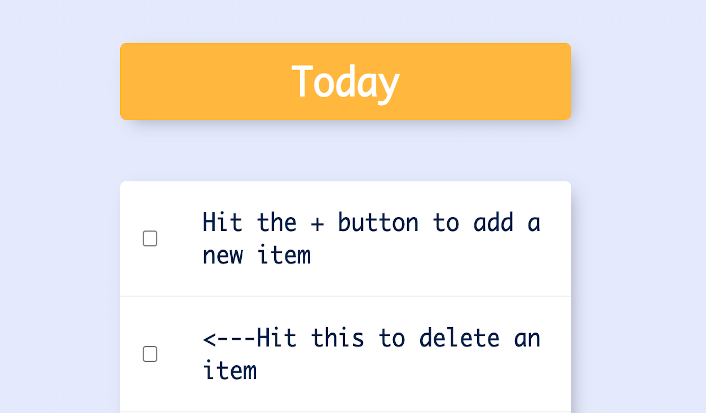
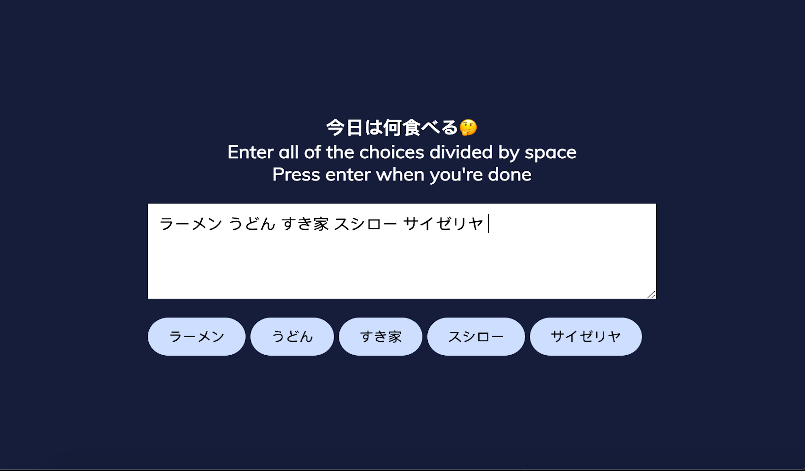

{kind=link}

A to do list app built with ejs & MongoDB
Using ejs to make templates for customized lists
Linked with MongoDB Atlas to do CRUD operations
Hello there. This is Pippi, a former student who has majored in sociology and transcultural studies for 5 years in 3 different countries, focusing on social movements, knowledge production, and Cyborg feminism.
Sociology made me who I am, while it is coding that helps me reclaim the sense of intergrity and the pleasure of learning.
I am especially interested in digital democracy, data for good, as well as the innovative potential of tech. I have made several attempts in these fields from the theoritical dimension, and I hope I will be able to reinvestigate them in the sight of programming someday in the future.
My life motto is what Morimi Tomihiko-san writes in his novel: 面白きことは良きことなり！ Feel free to ask me about sociology, transcultural stories and my journey from human science to coding.

Using ejs to make templates for customized lists
Linked with MongoDB Atlas to do CRUD operations

Having lived in Tokushima, Shikoku for 1.5 years, I personally have a passion for Buntan and Sudachi.
I hope I can contribute to the regional revitalization with the help of Tech/Internet in the future.

Getting latest movie data and rating scores from The Movie Database(TMDB) API
Searching function is also available

Made this randow choice selector to make my life easier.
That's exactly what tech is supposed to do, right?

An analysis on open-world game and the process of knowledge prouduction.
Reflecting on tech, game mechanism, wild and post-modern theories.
{kind=link}